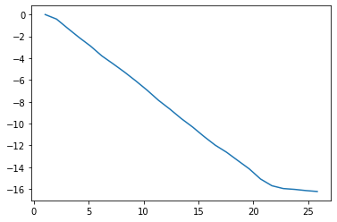
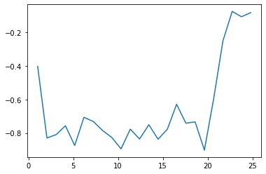

Tema 10: Derivasjon og integrasjon¶
Derivasjon¶
1. Derivasjon av funksjoner:¶
def f(x):
return x**2
def derivert(f, x, dx):
fder = (f(x + dx) - f(x))/dx
return fder
x = 1
analytisk = 2
for i in range(1, 17):
dx = 10**(-i)
numerisk = derivert(f,x,dx)
print(f"For dx lik {dx} er feilen {abs(numerisk-analytisk)}")
For dx lik 0.1 er feilen 0.10000000000000187
For dx lik 0.01 er feilen 0.010000000000000675
For dx lik 0.001 er feilen 0.0009999999996974651
For dx lik 0.0001 er feilen 9.999999917198465e-05
For dx lik 1e-05 er feilen 1.0000013929811757e-05
For dx lik 1e-06 er feilen 9.999243673064484e-07
For dx lik 1e-07 er feilen 1.0108780656992167e-07
For dx lik 1e-08 er feilen 1.21549419418443e-08
For dx lik 1e-09 er feilen 1.6548074199818075e-07
For dx lik 1e-10 er feilen 1.6548074199818075e-07
For dx lik 1e-11 er feilen 1.6548074199818075e-07
For dx lik 1e-12 er feilen 0.00017780116468202323
For dx lik 1e-13 er feilen 0.0015985556747182272
For dx lik 1e-14 er feilen 0.0015985556747182272
For dx lik 1e-15 er feilen 0.22044604925031308
For dx lik 1e-16 er feilen 2.0
2. Derivasjon av diskrete data (punkter)¶
from pylab import *
data = loadtxt("datafiler/heistur.csv", skiprows = 1, delimiter = ",")
tid = data[:,0]
posisjon = data[:,2]
plot(tid,posisjon)
show()
print(posisjon)
len(posisjon)

[ 0. -0.41530332 -1.27245747 -2.10837905 -2.89006706
-3.79347005 -4.52289161 -5.27799927 -6.08854176 -6.94216878
-7.86617154 -8.66880686 -9.53207626 -10.30728764 -11.17164433
-11.97476839 -12.62386432 -13.38963929 -14.14735903 -15.07900081
-15.69402869 -15.95216465 -16.02847067 -16.13767422 -16.22191004]
25
fart = []
for i in range(len(tid)-1):
dy = posisjon[i+1] - posisjon[i]
dx = tid[i+1] - tid[i]
der = dy/dx
fart.append(der)
plot(tid[:-1], fart)
show()

Integrasjon¶
1. Rektangelmetoden¶
def f(x):
return x + 2
a = 1 # x_0 = 1
b = 4 # x_N = 4
# Hva er integralet av f(x) mellom 1 og 4?
A = 0
N = 3
dx = (b - a)/N # dx = (4-1)/3 = 1
for i in range(N):
A = A + f(a + i*dx)*dx
print("Integralet av f(x) mellom", a, "og", b, "er:", A)
print(f"Integralet av f(x) mellom {a} og {b} er {A}.")
# Lag en funksjon: def rektangelmetoden(...)
Integralet av f(x) mellom 1 og 4 er: 12.0
Integralet av f(x) mellom 1 og 4 er 12.0.
def f(x):
return x + 2
def trapesmetoden(f, a, b, N):
dx = (b-a)/N
A = (f(a) + f(b))/2
for i in range(1,N):
A = A + f(a + i*dx)
return A*dx
itsatrap = trapesmetoden(f, 1, 4, 1)
print(itsatrap)
13.5
from scipy.integrate import simps, trapz, quad
from scipy.misc import derivative
from pylab import *
def f(x):
return x + 2
x = linspace(1,4,100000)
y = f(x)
simpson = simps(y,x)
trapes = trapz(y,x)
kvadd = quad(f, 1, 4)
der = derivative(f, 1)
print(simpson)
print(trapes)
print(kvadd)
13.5
13.500000000000002
(13.5, 1.4988010832439613e-13)